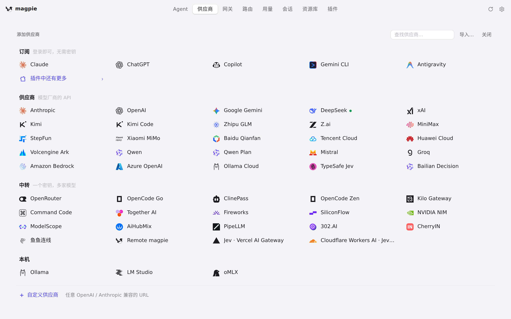
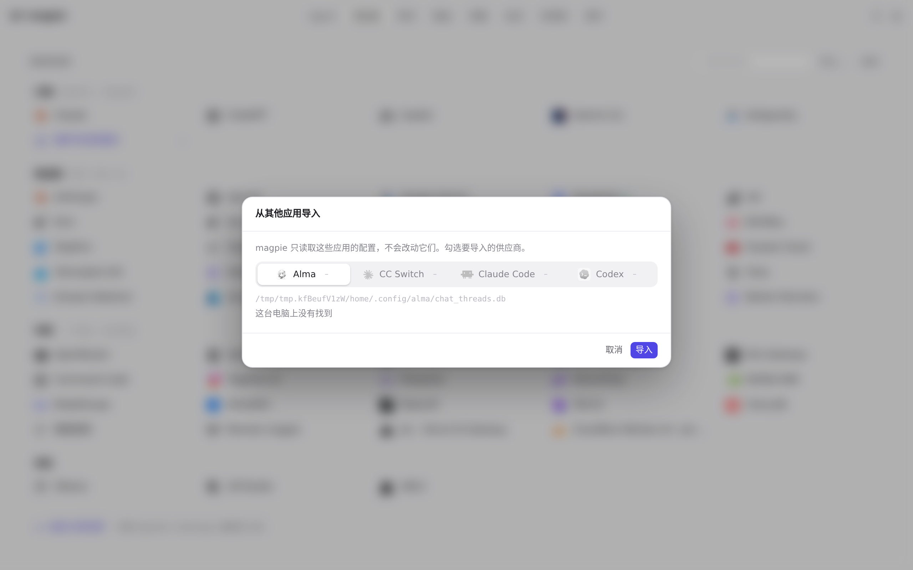

#879 界面预览
commit f33cef6 · 回到 PR · 供应商页新增了「本机配置发现」提示：打开供应商页时后台扫描 Alma / CC Switch / Claude Code / Codex 的可导入配置，列表为空时在列表上方显示醒目的发现条，已有供应商时在「添加供应商」旁显示紧凑的导入链接，并带「忽略」（指纹记在本地存储）。点该链接会用发现结果预选打开既有的导入面板，导入完成后重新扫描。
红线是鼠标走过的轨迹，红色圆环是一次点击；底部文字是这一步在做什么。空格暂停，← → 逐段查看。
 供应商页与本地配置发现入口 · 供应商页：列表与底部的「添加供应商」；本机没有可发现的配置，发现条不出现
供应商页与本地配置发现入口 · 供应商页：列表与底部的「添加供应商」；本机没有可发现的配置，发现条不出现

供应商页与本地配置发现入口 · 添加供应商面板，含「导入…」入口

供应商页与本地配置发现入口 · 从其他应用导入面板：这里列出各应用的可导入配置（本机为空）